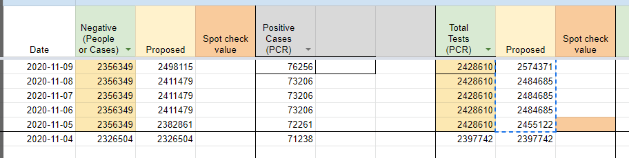

[CT] Update Total Tests (PCR) & Negatives value for 11/6-11/9
State or US: Connecticut
Describe the problem Starting on 11/5, Connecticut changed its reporting to lump antigen tests with PCR in the main testing number. We are backfilling our Positive Tests (PCR) and Negative (People or cases) numbers for 11/5-11/9 to use these values.
Link to data source https://portal.ct.gov/-/media/Coronavirus/CTDPHCOVID19summary11052020.pdf COVID-19 Tests Reported (molecular and antigen) 2455122
https://portal.ct.gov/-/media/Coronavirus/CTDPHCOVID19summary11062020.pdf COVID-19 Tests Reported (molecular and antigen) 2484685
https://portal.ct.gov/-/media/Coronavirus/CTDPHCOVID19summary11092020.pdf COVID-19 Tests Reported (molecular and antigen) 2574371
This issue has been automatically marked as stale because it has not had recent activity. It will be closed if no further activity occurs. Thank you for your contributions!
We’ve cleared their negatives, and backfilled their total tests in #1109, so I think this is done.
